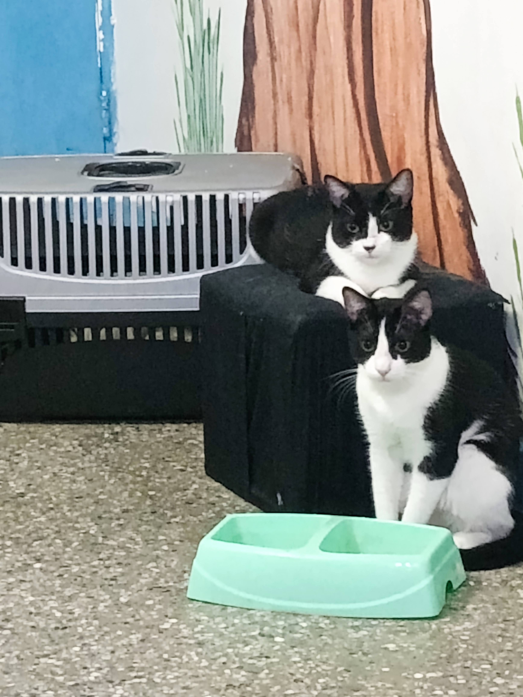
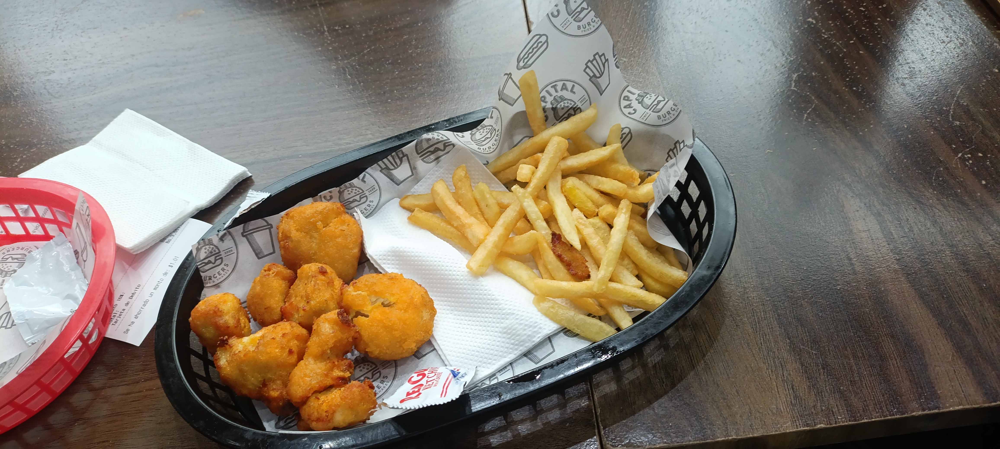

Yennifer Pico
Apasionada por la tecnología · Futura analista de sistemas
Estudiante de Análisis y Diseño de Sistemas, curiosa por naturaleza y
amante de la programación.
Bienvenido a mi rincón personal.

🌟 Sobre mí
📍 Caracas, Venezuela
🎓 Estudiante de Análisis y Diseño de Sistemas
📚 Aprendiendo cada día cosas nuevas en el área de programación
🎯 Intereses
- 💻 Programación
- 🎨 Diseños
- ✍️ Escritura creativa
- 🚀 Front-end sencillo
📬 Contacto
yenni_0719@hotmail.com
yenni09.work.gd
✨ Conectemos y creemos algo increíble ✨
🐾 Mis hobbies
🐱 Momentos felinos▼

📷 Mi compañero favorito, siempre curioso y lleno de ternura. 🐾
🍜 Delicias culinarias▼

📷 Sabores que alegran el corazón, cada plato cuenta una historia. 🍲
🌺 Playa & Flores▼

📷 El sonido del mar y la tranquilidad de la playa. 🌊

📷 La belleza natural de las flores, llenas de color y vida. 🌸